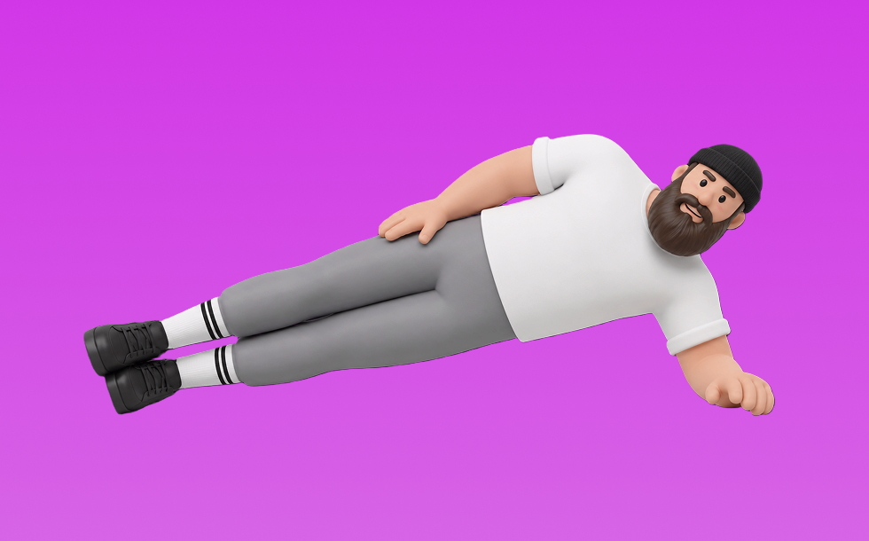

サイドプランク

サイドプランクとは、自重を使って「姿勢を保って支える」動作で腹斜筋、体幹を鍛える種目です。器具なしで手軽にでき、フォーム次第で負荷調整しやすいのが特徴で、頭から踵まで一直線に保ってキープします。体幹の安定性を高め、姿勢維持に役立つ効果が期待できます。
- 対象部位
- 体幹
- 器具
- 自重
- 記録形式
- 回数
- 別名
- 横プランク
YouTube動画
-
脇腹を引き締める筋トレ！「サイドプランク」の正しいやり方【左右 各20秒×3セット】
-
サイドプランク｜腹筋と体幹を鍛えるプランクメニュー
-
サイドプランクが苦手な人へ【パワー系ポーズの基礎】
-
腹筋に効く！脇腹を引き締める「サイドプランク」の正しいやり方
-
脇腹を鍛えてくびれを作る！サイドプランクの正しいやり方
-
【お腹の引き締め】低負担で続けられる横向きプランク！初心者向けの体幹トレーニング
-
【プランク7種目】腹筋、背筋、お尻周りなどの体幹部(コア)を7種目4分間での筋トレです。姿勢改善、脂肪燃焼(ダイエット)から様々な競技アスリートの方までおすすめです。
-
【最強プランク】初心者オススメ！腹筋を鍛える体幹トレーニング「プランク」の正しいやり方
-
【サイドプランク初心者向け解説！】サイドプランクの正しいやり方を細かく説明！
-
初心者のためのプランクのやり方｜正しいフォームを解説
-
意外と知らないサイドプランクの効かせる注意点【腹筋ー腹斜筋、腹横筋】
-
【腹筋＆体幹】基本を解説！プランク30秒3セットを一緒に
-
脇腹に効くきっついプランク！「ヘビーサイドプランク」の正しいやり方(体幹トレーニング)
-
3分プランクでお腹痩せ！腹筋・背中・お尻全身引き締める最強筋トレ！【ジムOK】
-
【超初心者向け】プランクで腹筋と体幹を鍛える【3分間】
-
【サイドプランク】効果＆正しいやり方〜足上げなど応用編も！短期間でくびれGET！
-
【毎日3分】爆速で腹筋を割る鬼のプランク7種目
-
出来ていない人が多い!?【サイドプランク攻略法】
-
体幹トレーニング／サイドプランク編☆軸の安定・フォームの安定！
-
体幹サイドプランクの正しいやり方の説明と注意点
-
プランクを毎日1分行うとどうなるのか
-
【50代・60代向け】腹筋を鍛えるプランクの正しいやり方！初心者向けにフォームを解説
YouTubeショート
-
サイドプランクやり方チェック！#shorts
-
本当に腹筋を引き締めたいなら、普通のプランクじゃなく、ひとつ上のプランクを目指して！ チャンネル登録をお願いします! #筋トレ #お腹痩せ #腹筋
-
正しいフォームでプランクやったら腰回り激変😳#アラサーダイエット #垢抜け #ダイエット #ビフォーアフター #30代ダイエット #お腹痩せ #腰肉 #プランク #プランクチャレンジ
-
反り腰でお腹ぽっこりさんは弓形プランクがオススメ！お腹にバッチリ効くよ
-
横っ腹を引き締める！サイドプランクの正しいコツ#横っ腹#浮き輪肉 #ダイエット初心者
-
プランクの正しいフォーム#shorts
-
プランクの正しいやり方
-
効果倍増!!サイドプランクのやり方
-
【筋肉つかない】自重トレ3種目 #自重トレーニング #筋トレ #フィットネス
-
プランク辞めて！
-
【ガチで効く】”腹斜筋”を鍛える宅トレメニュー４選🔥 #shorts #腹筋 #シックスパック
-
反り腰改善エクササイズ"ベイビープランク"#体幹 #反り腰 #体幹トレーニング #腹筋 #家トレ #腰痛 #腰痛改善
-
～サイドプランク～美人トレーナーが伝授☆1ヶ月でくびれを作る方法
-
もっと腹筋に効かせるプランクはこうやります！ #筋トレ #腹筋 #お腹痩せ
-
意味ないプランクあるある #shorts
-
【Jリーグのフィジカルコーチが教える】正しいサイドプランクの姿勢 #体幹トレーニング #筋トレ #サイドプランク
-
【理学療法士が伝える正しいサイドプランク】
-
サイドプランクでお腹痩せ！脇腹を引き締める腹筋トレーニング！
-
実際にやりました。プランクの雑学
-
【サイドプランク（膝付き） with ヒップアブダクション】
-
だらしない脇腹を絞る！サイドプランク 3選
動作方法
- 体幹を固定して姿勢を整える
- 反動を使わず、腹部の収縮を感じる
- 呼吸を止めずに動作する
動作ポイント
- 腰を反らしすぎない
- 首に力を入れすぎない
ワンポイントアドバイス
- 回数よりも体幹の安定を優先する
- 腰に違和感がある場合は可動域を調整する
目的別回数設定
目的や体力に応じた一般的な目安です。無理のない範囲で調整してください。
- 筋力アップ
- 1〜5回
- 筋肥大
- 6〜12回
- 持久力アップ
- 13〜20回
YouTube動画について
動画はYouTubeの公開情報をもとに表示しています。内容は投稿者によるもので、Biggrによる監修ではありません。
アプリを入手
筋トレやトレーニングの記録はBiggrにお任せください。今すぐ無料で使い始められます。